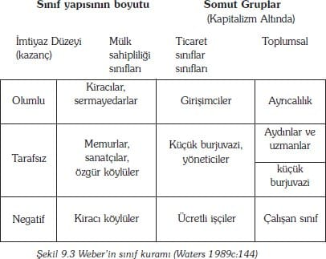

Diğer yeni değer 'sanayi üretimi'dir. Oldukça iyi bilinen, bu Parsons'cu boşluk/zayıflık modern A kutusunda geliştirilmektedir. Bu yeni değerleri yerleştirebilmek için, 'para ve piyasayı' ve 'evrenselci hukuku' gerçekten ait oldukları, orta aşamaya götürebiliriz. Bunlar gerçekten modernite için ön gerekler olmasa da, tarihsel olarak ortaya çıkışları moderniteden çok daha önceye gitmektedir.
Diyagram (9.2) bir dizi katmanlar halinde görülmelidir. Örneğin, modern toplumlar ilkel ve orta katmanların bütün evrensel özelliklerini ileriye doğru taşırlar. Evrimin sadece yeni değer ortaya çıkarmadığı, yapısal düzenlemelerin gerçekten farklılaştığını ve birbirinden ayrıldığına da dikkat etmelidir. Ek olarak, Parsons, Durkheim'ci bütünleştirme sorununu iki biçime ayırarak 'çözüm'e ulaştırmıştır: Sistem bütünleşmesi (I) alt sistemler arasındaki normlara göre düzenlenmiş alış veriş sorunudur. Bu dil, hukuk ve sonradan demokrasi tarafından ilerleyen bir tarzda gerçekleştirilir. Toplumsal bütünleşme (L) aktörler arasındaki, düzenli ve yordanabilir ilişkileri ortaya koyma sorunudur ve totem dini, açık kültürel meşrulaştırma (rahiplerin yönetimde kutsal egemenlik dini) ve soyut entelektüel standartlar (bilişsel rasyonalite) tarafından gerçekleştirilir.
Aşama değişimleri, evrimci atılımlar tarafından belirlenmektedir. Bunların sonundaki her atılımın yarattığı gerilim uygun ölçüde evrenselin ortaya çıkmasına neden olur. Tabakalaşma ilkelden ortaya doğru ilk harekette anahtar bir atılım sağlar. İktisaden avantajlı ekolojik yerlerde nesepler (soy kütükleri), diğer neseplere hakim olabilirler ve onları kendi monarşik ya da soylu statülerine tabi kılınmış sıradan halk olarak içlerine alırlar. Bu yeni ve köktenci eşitsizlik onun tanrısal kaynaklarını kanıtlayan açık/dışa yansımış yazılı kaynakların geliştirilmesiyle meşru kılınmalıdır. Benzer şekilde, bireysel istihdam sözleşmelerine ve mesleki uzmanlaşmaya dayanan bir sanayi üretim sisteme geçişten moderne doğru önemli atılımdır. Bu da, başka modern değerlerin ortaya çıkmasına yol açan eşgüdüm, kontrol ve taahhüt (kendini adama) gibi, gerilimleri oluşturur.
Luhman: Farklılaştıran Farklılaşma
İşlevsel farklılaşmayı, toplumsal yapı tarihinin tüm gidişatının açıklamasını yaptığı gibi görüşü, Parsons'un öğrencisi olan Luhman bile paylaşmaz. Luhman farklılaşmayı, daha çok, parçalara ayrılmayı (segmentation) (mekanik dayanışmayı) ve standart yapısal farklılaşma gibi tabakalaşmayı da kuşatan kaynak bir kavram olarak görmektedir. Bu üçünü evrimci bir şemada düzenlemeye girişir; bu şema Parsons'un ilkel, orta, modern dizisiyle bir çok ortaklığa sahiptir. Tanımları şunlardır (1982:263):
• Parçalılaştırıcı (segmentary) farklılaşma, bir sistem eşit ve özdeş alt sistemlere bölündüğünde meydana çıkar. En eski toplayıcı toplumlar, parçalılaştırıcı toplum biçimidir.
• Tabakalandırıcı farklılaşma, bir sistem derecelendirilmiş ve eşit olmayan alt sistemlere bölündüğünde ortaya çıkar. Derecelendirme genel ve önemli bir ilkedir. Feodal toplumlarda, tabakalandırıcı (aristokratik, dinsel, mülk sahibi köylüler) kadar parçalılaştırıcı farklılaşma vardır ('manor', geniş toprak arazili yönetimler).
• Alt sistemler birbirleriyle özdeş olmadıklarında, yani farklı ama derecelenmedikleri (not ranked) zaman işlevsel farklılıklar meydana gelir. İşlev, modern toplumların farklılaşması için, başlıca temeli sağlar. Ama parçalılaştırıcı (örneğin aileler) ve tabakalandırıcı (örneğin, sınıflar) etkenler gene de mevcuttur.
Bu farklılaşma biçimlerinin birbirini farklı kılmadıkları, dışlamadıkları vurgulanmalıdır. Sonraki biçimler, bütün öncekileri içinde taşımalıdır. Örneğin, işlevsel olarak farklılaşmış bir ekonomi, uzmanlar ve iş alanları arasındaki tabakalandırıcı farklılaştırmayı ve de aynı zamanda firmalar arasındaki parçalılaştırıcı farklılaşmayı içinde taşımaktadır.
Bununla birlikte, Luhman işlevsel farklılaşmış birimlerin tabakalaşmamış olması üzerinde ısrar etmektedir. Luhmann'a göre, hiçbir alt sistem bir diğerinin yerini alamaz. Çünkü hiçbir alt sistemin herhangi biri, diğerine işlevsel bakımdan eşdeğer olamaz. Hepsini merkezi bir konumdan ya da en üst otorite konumundan, düzene sokmak olanaksızdır. Toplum birliğinin, işlevsel kapanma ile bireysel işlevsel sistemlerin düzeyinde çevreye duyarlı bir şekilde açık olmanın dışında bir garantisi yoktur. Bu, modern toplumun daima artan karmaşıklığını ve hızlı değişimini yeniden üreten düzendir. [1990:432]
İşte burada, Parsons'a benzerlik tamamen bitmektedir. Luhman'da uyumcu gelişme mantığı yoktur. Buna karşın, bir farklılaşma düzeyinden, diğerine geçiş sadece bir rastlantı konusudur ve ne insani yönelimin ne de birkaç genel tarihsel yapısal ilkenin sonucudur. Luhmann, onlar rastlantısal olaylardır diyor. Çünkü, baskıların ve yasakların olmaması olasılık dışıdır. Her geçişin üç uğrağı vardır. -varolan durumdan ayrılma; yeni biçimin seçimi ve toplumun düzene kavuşturulması için, yeniden istikrara kavuşturulması- Bunların her birinde geciş rahatlıkla görülebilir.
Durkheim'in anomi sorunu de kolayca 'çözülebilir'. Luhman 'farklılaşmış birlik paradoksu' dediği bir araç kullanıyor. Herhangi belli bir birimin içinden bakıldığında, dışarıdaki toplumsal dünya anlaşılamazcasına karmaşık ve çalkantılı görünür. Yine de, bu önemli değildir. Çünkü, her farklılaşmış birim, değer-yönünü bulmak için kedini dışarıya göstermez, her biri değerler bakımından kendine içinde yeterli hale gelir. Örneğin, iş firmaları, değerlerini dinden değil piyasadan, kendi kültürlerinden alırlar. Farklılaşmış birimler, birbirleriyle iletişim kurabildikçe düzenleyici değerleri paylaşma ihtiyacı duymazlar. Yüksek derecede farklılaşmış bir dünyada, yegane işlevsel zorunluluk bir iletişim sistemidir:'eğer yapısal değişimler farklılaşmanın birincil modelini yahut kitle iletişim sistemini tersine çevirmeseydi, dünya, toplum paramparça olurdu' (1982:248). Paradoks şu ki, dünya, değerleri tutarlı olmasa da (birlik göstermese de ) parçaları arasında birlik gösterir.
Farklılaşmanın geleceğine ilişkin kuramlar
Farklılaşmaya ilişkin tartışmalar için sahneyi işlevselci kuramlar kurmaktadırlar. İşlevselciliğin, sürekli ilerleme ve Amerikanlaşmaya dair pembe gelecek vizyonu, kapitalist gelişme biçimini kökten farklı gören Marksist kuramcılar için kolay bir hedef sağlamakla kalmadı, aynı zamanda değişmeyi pürüzsüz, yavaş bir dönüşümden çok sarsıntılı ve sallantılı bir olay olarak görmek isteyenler için dahi, bir hedef oldu. Biz Marksist seçeneklerden birine giriyoruz. Bu seçenek farklılaşma konusuna ısrarla odaklanmaktadır. Bu, Braverman'ın teknik iş bölümünün gelişimi hakkındaki düşüncesidir. Bundan sonra ise, farklılaşma sonrasında bir şey olabileceğini öne süren kuramları incelemeye geçeceğiz.
Braverman: farklılaşmanın dışlanması (dystopia)
İşlevsel farklılaşmanın, Marks ve Weber doğrultusunda, araçsalcı açıklanması göreli olarak enderdir. Tek ve etkili örneği, Braverman'ın çalışmasıdır (1974). Braverman emek süreciyle ilgilenmiştir; bununla, insan emek gücünün, fiziksel nesnelerin yeni ürünlere dönüştürmesinde kullanılmasını kastetmişti. Konusu, kapitalizmde, iş idaresinin sürekli olarak emek gücünün kontrol edilmesi ve böylece de işçi veriminin azami hale getirilmesi ve bununla da sermaye birikiminin azami hale getirilmesidir. İş bölümünün, iş ve işçinin farklılaşmasının yönlendirmesini, iş sürecinin kontrolünde önemli bir araç olarak gördü.
Braverman bizim daha önce dikkat çektiğimiz ayrımı ele almakla işe başlıyor. Bunu ilk kez Weber yapmıştı. Bu ayrım, toplumsal ve teknik işbölümü arasındaydı. Toplumsal iş bölümü, mesleklerin veya işlerin bireylere normal dağıtımıdır ve bütün toplumlarda bulunur. (Örneğin, avcı-toplayıcı topluluklarda, toplama işinin kadınlara, avlanmanın da erkeklere tahsisi gibi). Kapitalist toplumların ayırt edici ve sorunsal özelliği, mesleklerin minimum parça görevlere kıyıldığı anormal bir teknik işbölümüdür. Bu fragmanlara/küçük parçalara ayırma hareketi, iş idaresince yürütülür; süreçte bu idare ürünün yapılmasındaki tüm bilgi ve beceriyi kendine maleder. İşçi oldukça rutinleşmiş, dar, beceriksiz, tekrar edici ve monoton bir uygulama içindedir. Bu performans, bir makinenin hızıyla ya da bir denetçi (iş çavuşu) refakatinde düzenlenir. İşçi, yönetimin denetimine direnmek için hiçbir kapasiteye sahip değildir.
Braverman emek sürecinin farklılaşmasında iki önemli aşama belirlemektedir. Birincisi 20. yüzyılın başlarında, Taylor'un sanayi üretiminde 'bilimsel yönetim' dediği uygulama ilkeleridir. Bilimsel iş idaresi/yönetim, işi, bir dizi küçük küçük görevlerin bir araya gelmesi ve bunların deneysel olarak ölçülmesinin analizi anlamına gelmektedir. Öyle ki, her bir görevin en verimli şekilde yerine getirilmesi için gerekli koşular bu ölçümlerle sağlanmalıydı. Böylece, işçilerin kendilerini emek sürecini anlamak için zorunlu hissetmeyecekleri şekilde görevler, yeniden organize edilebilir ve basitleştirilebilirdi. Ancak, bilimsel iş idaresi için anahtar sorun, denetlemek'ti. Şans eseri, yardım hazırdı: seri/bant üretim. Bu, öyle bir dönemin kapısını açtı ki farklılaşmış görevlere uygun düşen beceriler bile makine tarafından üstlenilebiliyordu. Daha önemlisi, bir makinenin her adımı yönetici tarafından denetlenebildiğinden, işin hızı da denetlenebiliyordu. Bilimsel yöneticilik (iş idaresi) ve üretim bandı, kol gücüne dayalı işçilerini, makinenin ekleri/parçaları, haline getirdi, beceriden yoksun , denetlenebilir durumda idiler.
Emeğin farklılaşmasında, ikinci aşama ofis çalışanları/işçileri (bürokrasi, beyin takımı, kalem işi yapanlar, çn.) ile ilgilidir. Bell gibi (aşağıya bakınız) Braverman da ofis çalışanlarının kapitalistin işlevlerini nasıl üstlendiklerine dikkat çekti. Sonradan ortaya çıkmış olsa bile, bu da, bilimsel iş idaresi ve makineleşme süreçlerine tabi olmuştur. Özellikle 20. yüzyılın son kısmında, bilgisayar şebekeleri ve çalışma istasyonları, ofis çalışanlarını beceriksiz/gereksiz kıldı. Hem de onları gittikçe artan bir makine kontrolüne bağlı kıldı. İlk uygulamalarında, bilgisayar, sadece veri işlemeyi etkiliyordu. Ama, şimdiki etkileri muhasebeye, kelime ayıklamaya hatta satıcı-alıcı ilişkilerine kadar yayılmış bulunuyor.
Farklılaşmadan sonra: sanayileşme sonrası ve post-modernleşme
Bell'in farklılaşma eğilimlerinin sonucuna dair öngörüleri 'Amerikan Ütopyası' geleneğinde dört dörtlük temsil edilmektedir. Sürecin sonucu, sanayi sonrası toplumudur (1973). Böyle bir toplumun beş özelliği vardır:
• Mesleki yapının farklılaşması, toplumu öyle bir noktaya getirir ki hizmet üretimi mesleklerine girmiş insanların sayısı, bütün diğerlerinden daha fazla olur.
• Bu meslekler ağırlıklı olarak profesyonel ve ağırlıklı olarak teknik mesleklerdir ve toplumun egemen sınıfını oluşturmaktadırlar.
• Kuramsal bilgi, pratik bilgiye egemen olur; keşfetmenin, siyaset oluşturmanın başlıca kaynağı haline gelir.
• Teknolojik gelişme, insani denetim ve planlama çerçevesine girer. Teknolojik hedefler oluşturulabilir ve gerçekleştirmek için etkinlikler eşgüdümlenir. İcat etme artık rastlantının hükmettiği bireyselleşmiş bir etkinlik değildir.
• En önemli teknoloji artık fiziksel değil, düşünseldir. Öyle ki, daha önce sezgilere ve yargılara dayanan insani kararlar, şimdi formüllere akılsal hesaplara dayandırılmaktadır.
Sanayi sonrası toplumu sınıfsızdır, rasyonalize edilmiştir, hazza yönelimlidir, teknolojikleşmiştir ve entelektüelleşmiştir -halis bir Amerikan ütopyası-.
Braverman ile karşıtlık bundan daha belirgin olamazdı. Bell'e göre, hizmet sektörü çalışanları, yeni oluşan güçtür. Bu çalışanlar, proleter statüsüne indirgenmişlerdir. Bell'e göre, kuramsal bilgi ve düşünsel teknoloji geniş bir alana dağılmıştır. Bilgi ve kavramlaştırma/anlama işlemleri birkaç elde toplanmıştır; sanayi sonrası toplumda makineler insan olanaklarını ilerletirler. Ama, bunlar, Braverman'ın proleterleşmiş geç kapitalizminde becerileri ,değerden ve güçten düşürmektedirler.
Belki hem Bell hem de Braverman için kritik sorun, farklılaşma sürecine dair modernist görüşlerin tuzağına düşmüş olmalarıdır. Bu süreçte, kavramsallaştırılabilen /düşünülebilen her şey ilerleme sürecine ilişkilidir. Şimdi özetleyici bir düşünceyi inceleyelim; bu sürecin onların ileri sürdüğü kadar acımasız ve sınırsız olmadığı fikrini veren birkaç başka kurama dikkati çekmektedir.
Crook, Pakulski ve Waters'a göre (1992) kapitalizmin ileri aşaması, başlıca iki grup sürecin ürünüdür. Bu bilinen terimleriyle oldukça farklılaşmış toplumdur ve yüksek derecede uzmanlaşma ve karmaşıklık arz eder. Ama aynı zamanda oldukça örgütlenmiş bir toplumdur ve yüksek derecede rasyonalizasyon süreçlerini ve birlikte değişmeleri içermektedir (bkz. Bölüm 6). Bu yazarlar, bu iki sürecin öyle bir aşırı duruma geldiğini ileri sürmektedirler ki 'postmodernleşme' diye adlandırılabilecek toplumsal bir aşama ile örtüşme eğilimi göstermektedirler.
Genel olarak, bu yazarlar, yapısal-işlevselci farklılaşma varsayımlarını kabul etmektedirler. 20. yüzyıl kapitalist toplumları bir dizi değişik tipte toplumsal birimden oluşmuştur, her biri kendi işlevlerinde uzmanlaşmıştır. Benzer işlevleri olan toplumsal birimler de benzer yapıdadırlar. Örneğin:
• Üretici iş çevreleri, ortak işlevlere sahiptirler; insanımsı-makine takımlarının ortak yapısına sahiptirler; mülkiyetin ile denetiminin ayrılması, çalışanların idarecilerden ayrılması ve kitle üretiminin pazara egemen olması, gibi özellikleri vardır.
• Ailenin biyolojik ve toplumsal olarak yeniden üretimi işlevi vardır; bunların karı kocalı merkez ve erkek egemenliğinde olma eğilimleri vardır.
• Devletler hükümetin işlevini sağlar; onların demokratik ve refah yönelimli olma eğilimleri vardır.
• Kiliseler ahlakı sağlar; onların evrenselci ve soyut teolojileri kucaklama eğilimi vardır.
• Siyasal partiler siyasete dahil olmayı sağlarlar; çok çeşitli konulara el atarlar ve kitle onayı arama eğilimleri vardır.
Bununla beraber, çağımızda toplumsal birimler hem yapı düzeyinde hem de işlev düzeyinde farklılaşır görünüyorlar ve artık bir toplumsal birimin yapısını onun işlevine bakarak okumak çok daha az olanaklıdır. Onlar bu sürece aşırı farklılaşma diyorlar –yani, farklılaşma düzeyinin pek çok aşırılığı vardır-. Bazı örnekleri:
• Üretim birimleri olayında kütle üretim sistemleri hâlâ bulunabilir. Ama pazar-yeri üreticileri, kooperatifler, teknokratik ortaklık, kısımlandırılmış organizasyonlar, alt mukaveleciler, ev işçileri vs. de bulunabilir.
• Aileler de geniş yelpazeli yapılar sergilerler –çoğalan, artan kuşaklar, yatay gruplaşmalar, tek ebeveyn, homoseksüel ortaklık, çocuksuz heteroseksüel çiftler vb-.
• Devlet işlevleri ulus üstü olmaya ve yerel düzenlemelere doğru çözülüyor.
• Kiliseler işlevlerini ve ortamlarını genişletiyorlar.
• Siyasal partiler yaygın materyalist değerleri benimseyen kitle hareketleri karşısında zayıflıyor.
Onlar işlevlerin ve yapısal olanakların öyle bir karmaşası olduğunu ileri sürüyorlar ki aşırı farklılaşma paradoksal olarak toplumu farklılaşma dışına doğru hareket ettiriyorlar.
Fakat yapısal-işlevselcilik ile karşılaştırıldığında, Crok, Pakulski ve Waters, Habermas'a (bkz. Bölüm 5) ve başkalarına dikkati çeviriyorlar ve modernleşmenin ikinci önemli özelliğinin merkezileşmiş örgütlerin gittikçe artış göstermesi olduğunu söylüyorlar.
Devlet ve ekonomik birimler, eviçi ve gayrı resmi düzenlemelerin denetimini ele geçirmek için, kendi ürettikleri medyayı, iktidarı ve parayı, artan bir şekilde kullanmaya başlıyorlar. Bu süreç, tek merkezli bir organizasyon düzeyinin tamamlanmasıyla son bulur (hiperorganizasyon). Burada yaşam dünyası (lifeworld) yapıları (aile, cemaat ve kültür) egemenlik altına girmiş olmakla kalmazlar, para ve iktidar merkezlerince tamamıyla alt edilirler. Bununla beraber, sistemin ve yaşam dünyasının birbiri içine geçişi, devletlerin ve ekonomilerin düzenliliğini tehlikeye düşürebilir -eğer örgütler'kültürcü' ve 'aileci' olurlarsa o zaman verdikleri emirler baskıcı olmaz ve sadece fikir olurlar. Bu bakımdan, burada da mecazi bir tersine çevrilme vardır- örgüt, hiper-örgütlenmeye yol açtıkça örgütsel bozulmayı da (disorganizasyonu) üretir.
Bu tersine dönmeler, aşırı farklılaşmalar ile aşırı organizasyon arasındaki kritik gerilimi arttıracaktır. Bu iki süreç, birbirinden bağımsız olarak ayakta durabilseler de birbirlerini karşılıklı olarak ayakta tutamazlar. Crook, Pakulski ve Waters bu çözüme ulaştırılamaz karşıtlık için, üç temel neden ileri sürmektedirler: kontrol medyasının kaynaklarına ilişkin konular; nesnelerin kontrole karşı hassasiyetleriyle ilgili konular; toplumsal bilimler arasındaki mesafenin azaltılmasına ilişkin konular.
• Para ve güç için çok sayıda kaynak varsa, iş dünyası ve hükümetler denetim kaynağı olarak etkinliklerini yitirirler; başka türlü söylenirse, kendine yeterlilik başka kaynağa bağımlılığı azaltır.
• Eğer bir toplum aşırı farklılaşmışsa, belli bir bürokratik veya ekonomik yönlendirmenin sonuçları önceden kestirilemez. Çünkü, hedefi belirlemek olanaksızlaşmıştır. Devletler yönetilemez, ekonomiler yürütülemez ve yaşam dünyaları anarşist olurlar.
• Kamusal olanın yerel olanla iç içe geçişi aşırı farklılaşmayı olumsuzlar, toplumsal birimleri belirsiz bir karmaşaya indirger; o kadar çok farklı toplumsal birim tipi ve o kadar çok bireysel ayrılık olur ki sınırlar ve mesafeler ortadan kalkar.
Söz konusu yazarlar, bu tür karışıklıkların sonuçlarını aşağıda özetlemektedirler:
Özgür toplumsal yapı parçaları, modernitenin merkezi doğrultusundan başka yöne doğru hızla ayrılırken, postmodernleşmenin başlangıcı gerçekten bir patlama şeklinde olur. Postmodernleşmenin özelliği, şimdiye kadar görülmemiş düzeyde önceden bildirilemez ve açıkça kaotik olmasıdır. Eylem tabandaki maddi sınırlamalardan kopar (daha çok bu sınırlamalar kaybolur) ve zevk, seçme ve tercihler gibi isteğe bağlı olan alana yönelir. Bu durumda, yönetilen toplumsal gruplar arasındaki sınırlar kaybolur. Böylece sınıf, cins, ayrımcılık, etnisite'nin toplumsal öneminde düşüş olur. Aynı şekilde, sınıf temelli siyasal eylemler ve yüksek/popüler kültür arasındaki ayrımlar da dahil olmak üzere çeşitli dile getirme biçimleri ortadan kalkar. Daha soyut bir anlatımla, moderniteye özgü, kültür, toplum ve kişilik özellikleri öyle bir ters döner ki bağımsız, salt toplumsal yapısal alan artık bir anlam ifade etmez. Bunun yerine, 'toplum' işaret kalıbı olan 'kültür' aracılığı ile anlaşılır olur ve ve semboller yapısal sınırların içine girip onu aşındırır. Devletleri, tekelci ekonomik organizasyonları, rahipler sınıfını, askeri kuvvetleri, bilimsel kuruluşları içine alan geniş ölçekli toplumsal fenomenlerin kudreti, giderek azalır ve kültür akımları tüm dünyaya yayılır ve etkinleşir, belirlenemez şekillerde kesişir.[1992:35]
Onlara göre, postmodernizmin ortaya çıkışı, aşırı farklılaşmadan ve tek merkezli örgütlenmeden farksızlaşmaya ve örgütsüzleşmeye doğru hızlı ve radikal bir geçişi temsil etmektedir.
Küreselleşme: Bir Fark Dünyası
Şimdiye kadar farklılaşmaya ilişkin bütün düşünceler, farklılaşmayı, toplumlarda meydana gelen toplumsal bir süreç olarak ele almaktadırlar. Bu düşünceler, çoğunlukla, ulus devletlerinin toplumsal yapı öğelerinin nasıl birbirlerinden ayrıldıkları ve birbirlerinden uzaklaştıkları konularına yönelmişlerdir. Şimdi, birincil çözümleme birimi olarak, dünyaya bir bütün olarak odaklanan çözümlemeleri konu edinebiliriz. Küreselleşme kuramları, dünyanın bir bütün olarak ne ölçüde farklılaştığını ya da aslında, farksızlaştığını değerlendirmektedirler.
Gerçi dünyayı tek bir sistem olarak ele alan daha önce yapılmış çalışmalar da vardır: Örneğin Lenin'in "emperyalizm" kavramı (1939), merkez ve çevre arasında bağımlı bir ilişkiyi dile getiren Bağımlılık Kuramı (örneğin Amin, 1974) bunlar arasındadırlar, ancak, dünyayı tek bir sistem halinde inceleyen orijinal sosyolojik düşünce Wallerstein (1974)'ın düşüncesidir. Wallerstein'ın birincil çözümleme birimi, dünya sistemidir; bu öyle bir birimdir ki kendisinin yapı parçası olduğu toplumlara özgü toplumsal süreçlerden ve ilişkilerden bağımsızca gelişme kapasitesine sahiptir. Bir dünya sisteminin şu özellikleri vardır:
• Dünya sisteminin, gelişim dinamikleri büyük ölçüde içseldir. Yani, dinamikler dışsal olaylar tarafından tayin edilmezler.
• Dünya sistemi, maddi olarak, kendi içinde bağımsız ve kendine yeterlidir. Çünkü, üye toplumlar arasında geniş bir işbölümü vardır.
• Bir kültür çeşitliliği taşır. Kültürler birlikte ele alındıklarında, bireysel katılımcılar, bunların, dünyayı fenomenolojik bir anlamda oluşturduklarını (kurdukları) görürler (Wallerstein, 1974:347-8).
Üç tür dünya sistemi olanaklıdır:
• Dünya İmparatorlukları; bunlarda, bir kültürel çoğunluk/çeşitlilik, tek bir yönetim egemenliği altında birleştirilmiştir. Bir çok dünya imparatorluğu örnekleri olmuştur. Eski Mısır, Eski Roma, Eski Çin, Moğol Hindistan, Feodal Rusya, Osmanlı Türkiyesi;
• Dünya Ekonomileri, bunlarda her biri tek bir kültüre odaklanan ('ulus-devletler') bir çok siyasal devlet, ortak bir ekonomik sistem tarafından birbirleri ile birleştirilmişlerdir; dünya ekonomisinin sadece bir tek istikrarlı örneği olmuştur. Bu modern dünya sistemidir ve bu da tek bir kapitalist ekonomi tarafından birleştirilmiştir (buna devletçi sosyalist toplumlar da dahildirler); ve
• Dünya sosyalizmi: burada hem ulus-devlet hem de kapitalizm ortadan kalkar ve çeşitli kültürleri birleştiren, tek, birleşik siyasal-ekonomik sistem gelir; dünya sosyalizmine uyan herhangi bir örnek yoktur. Ve çözümlemede, ütopik durumunu korumaktadır.
Wallerstein, modern Avrupa dünya-sisteminin çıkışı ve evrimi üzerinde yoğunlaşmaktadır. Bu sistemi, geç ortaçağ döneminden, günümüze kadar izler. Günümüzdeki durumu şöyle tasvir ediyor:
15. yüzyılın sonunda ve 16. yüzyılın başında, Avrupa dünya-ekonomisi diyebileceğimiz bir şey ortaya çıktı. Henüz bir imparatorluk değildi ama, bir imparatorluk kadar mekana sahipti ve bazı özelliklerini paylaştı... Bir "dünya" sistemiydi, bütün dünyayı kapladığından değil, hukukça tanımlanan herhangi bir siyasal birimden daha büyük olduğundan. Ve bir "dünya ekonomisi"ydi. Çünkü, belli ölçüde kültürel bağlarca ve sonunda siyasal düzenlemelerce ve hatta konfederal yapılarca güçlendirilmiş olmasına rağmen, parçalar arasındaki temel kenetlenme ekonomikti [1974:15, italikler orijinalinde var]
Dünya ekonomisinde siyasal baskının odak noktası, devlet yapısıdır. Devlet, kapitalizmin harcamalarını emerek, onun istikrarına ve yarattığı toplumsal sorunların çözümüne yardım eder. Bu, temel farklılaşma sürecini, ekonomik birimlerden devletlere kaydırmaktadır. Böylece, modern dünya sistemi üç tür devlete ayrılır:
• Merkez devletler, bunların, ulusal kültürle bütünleşmiş güçlü bir yönetimsel yapısı bulunmaktadır. Gelişmişlerdir, zengindirler ve sistem içinde egemendirler; geç-yirminci-yüzyıl örnekleri, Avrupa Birliği, Japonya ve ABD'dir.
• Çevre/çeper (peripheral) alanlar; bunlar özgünlükleri zayıf devletlerdir ve kültürleri işgal edilmiştir. Yoksuldurlar ve merkez devletlere ekonomik olarak bağımlıdırlar; geç 20. yüzyıl örneklerine ,güneyin yeni sanayileşmiş ülkeleri dahil, Asya, Afrika ve Latin Amerika'dır.
• Yarı çevresel alanlar; bu ülkelerde, orta düzeyde kuvvetli yönetimsel yapılar, tek-yönlü üretim ya da düşük teknolojili ekonomi vardır (bu yüzden de bir ölçüde merkez devletlere bağımlıdırlar). Bunlar, düşüşe geçmiş daha önceki merkez devletler olabilirler yahut çevreden doğuyor olabilirler; geç 20. yüzyıl örnekleri, petrol üreticileri, doğu Avrupa'daki önceki sosyalist devletler ve Güneydoğu Asya'nın 'genç canavar toplumları' ve/veya Asya Kaplanları.
Bu bölgelerin her birinde, devletler arasında işbölümü vardır:'daha üst düzey beceri ve daha çok kapitalleşme gerektiren görevler, daha üst derecedeki alanlar için rezerve edilirler' (1974:350). Bununla beraber, yarı çevresel alanların konumu, özel bir kuramsal önem taşır. Çünkü, onların varlığı merkez ile çevre arasındaki çatışmayı ve kutuplaşmayı engeller.
Wallerstein uluslar arası farklılaşma ile içsel sınıf yapısı arasındaki olası bağlantıyı incelemek için çok çaba göstermektedir. Weberci anlamda kendinin bilincinde olan sınıf toplulukları (aşağıya bakınız) üzerinde başlıca toplumsal sınıfların gelişimi konusunda yoğunlaşmaktadır. Örneğin, 16. yüzyıl Avrupa devletleriyle sınırlanmış, ulusal burjuva, sınıf bilincinin oluşumu (formasyon) gibi konuları tartışmaya açar. Bunu, küçük ama dikkat çeken işçi sınıfının mevcudiyet kazanmasını (olgusunu) karşısına alarak yapar. Önemli husus şudur: Bu sınıf oluşumları, üretimsel toplumsal sistem ilişkileri dünya-sistemini dengelediği sürece, dünya sistemi oluşumlarıyla eklemlenir. Merkez devletlerin, merkezde kalma yeteneği sermaye birikimi yeteneğine bağlıdır.
Bazı kimseler, Wallerstein'in kuramını, küreselleşme hakkında yeni söyleyişlerin öncüsü olarak göklere çıkarmakla birlikte (örneğin, Giddens, 1990:68-70), düşünceleri, gerçek küreselleşme kuramına temelde ters düşmektedir. Wallerstein için, dünya jeo sisteminde bütünleşme mekanizmaları, temelde ekonomiktir. Bu mekanizmalar, göreli olarak özerk devletlerle göreli olarak bağımsız kültürler arasındaki ticari ve sömürücü ilişkiler şeklinde kurulmuşlardır. Asıl küreselleşme kuramları, kültürel yönelimlerin küresel bir birleşimini önerirler. Bu da ulusal politikalar ile ekonomiler arasındaki engelleri, açıp kapamaya yaramaktadır.
Küreselleşme konusunda kültürel açıdan en etkili kuram Robertson (1992) tarafından gerçekleştirilmiştir. Robertson küreselleşmeyi şöyle tanımlıyor:'hem dünyanın sıkışması hem de bir bütün olarak dünya bilincinin yoğunlaşması' (1992:8). Küresel sıkışma kavramı Wallerstein'a bazı bakımlardan benzemektedir. Bu kavram daha önceki bağımsız sistemler arasında gittikçe artan birbirine karşılıklı bağımlılık düzeyine gönderme yapmaktadır. Ama tanımın daha önemli öğesi, bilincin yoğunlaşmasıdır. Bununla, Robertson bireysel fenomenolojilerin, bütün dünyaya, dünyanın yerel yahut ulusal bir kısımlarına daha fazla hitap etmesi olasılığını kastetmektedir. Bu, sadece kitle iletişim araçları ve tüketim tercihleri gibi görünürdeki kültürel olgular için doğru olmakla kalmaz [bu kültürel fenomenler içinde zevklerin küreselleşmesi direkt olarak kavranır], ama aynı zamanda, konuları küresel terimlerle kültürel bakımdan yeniden tanımlayabildikçe doğrudur da. Örneğin, askeri-siyasal konuları, 'dünya düzeni' terimleriyle yeniden tanımlıyoruz; veya ekonomik konuları uluslararası ekonomik durgunluk gibi terimler ile tanımlıyoruz; veya pazarlama konularını 'dünya' ürünleri (örneğin dünya arabası) terimiyle; veya dini konuları ekyumenizm (ecumenism) terimleriyle; veya yurttaşlık konularını 'insan hakları' terimleriyle veya kirlenme ve arındırma konularını 'gezegeni kurtarma' terimleri ile yeniden tanımlıyoruz.
Küresel bilinçlilikte bu yükseliş, dünyanın tek bir sistem olarak yeniden kurulması olasılığını yükseltiyor. Bu nedenle, Robertson dünyanın gittikçe birleştiğini iddia etmektedir, ama gittikçe bütünleştiğini de söylememek için de dikkatlidir. Dünya tek bir sistemdir ama çatışmayla parçalanmaktadır ve tek sistemin gelecekte alacağı sisteme dair evrensel bir uzlaşı hiçbir şekilde bulunmamaktadır.
Düşünsel olarak, küreselleşme, bireysel görelilik içermektedir ve ulusal referansları uluslar üstü referanslara işaret etmektedir.Bu nedenle, dört öğe arasında kültürel, toplumsal ve fenomenolojik bağlantılar oluşturmaktadır:
• bireysel benlik
• ulusal toplum
• uluslar arası toplumlar sistemi
• genel olarak insanlık.
Küreselleşmede, örneğin, kendini tanımlama eğilimi, ulusal bir toplumun yurttaşı olma, uluslar arası ilişkilerin gezegensel akışından etkilenmiş olma ve bir insanlık örneği teşkil etme şeklinde vardır. Benzer şekilde, ulusal bir toplum, üyeleri tarafından sadece bireysel yurttaşlardan oluşmuş olarak anlaşılmaz, aynı zamanda, ulusal topluluğun kendisinin bir uluslar topluluğu üyesi olduğu ve insanlığa karşı genel yükümlülükleri olduğu düşünülür. Bu terimlerle ifade edilince, küreselleşme, bir farksızlaşma sürecini değil, içinde farklılaşmanın sürekli yer alacağı yeni bir çerçevenin ortaya çıkışını temsil etmektedir.
Robertson küreselleşme sürecinin yeni olmadığını, modernliğin ve kapitalizmin yükselişinin öncesinde bulunduğunu da ısrarlı bir şekilde savunmaktadır. Bununla beraber, modernleşme, küreselleşmeyi hızlandırmasına ve son yüzyıl boyunca sürecin doruk noktasına çıkmasına hız kazandırmıştır. Dahası, gelişimin merkezi kaynağı ve merkezi odak noktası Avrupa uygarlığıdır. Robertson küreselleşme yolunu, beş aşamadan oluşan bir dizi aşama olarak görmektedir.
I. Filizlenme Aşaması (Avrupa, 1400-1750). Ortaçağ dini birliğinin çözülüşü, insanlık ve birey hakkında genelleştirmelerin gelişmesi, gezegenin ilk haritaları; güneş-merkezli evren.
II. Açılma Aşaması (Avrupa, 1750-1875. Ulus-devlet; devletler arasında biçimsel/resmi diplomasi; yurttaşlık, uluslar arası sergi ve iletişim anlaşması; ilk Avrupai olmayan uluslar.
III. Kalkış Aşaması (1875-1925). Dünyanın dört referans/dayanak noktası terimleriyle kavramlaştırılması, -ulus-devlet, birey, uluslar arası toplum ve insanlık, uluslar arası iletişimler, sportif ve kültürel ilişkiler; ortak takvim; öyle tanımlandığı üzere ilk ve son dünya savaşı; uluslar arası klüpte daha fazla Avrupalı olmayanlar.
IV. Hegemonya İçin Mücadele Aşaması (1925-1969). Milletler Cemiyeti ve Birleşmiş Milletler; İkinci Dünya Savaşı; soğuk savaş; savaş suçları ve insanlığa karşı suçlar kavrayışları; evrensel nükleer tehdit; üçüncü dünyanın ortaya çıkışı.
V. Belirsizlik Aşaması (1969-1992). Uzayın keşfi; post-materyalist değerler ve haklar söylemleri; cinsel tercih, cins, etnisite ve ırka dayanan dünya cemaatleri; daha karmaşık uluslararası ilişkiler; küresel ve çevresel sorunların tanınması; uzay teknolojisi yoluyla küresel kitle medyası (Robertson 1992:58-60).
Bu gelişmeler tek tek toplumların iç dinamiklerinden bağımsızca meydana gelmektedir. Gerçekten de küreselleşme, bu iç dinamikleri kaçınılmaz olarak etkileyecek olan kendi mantığına sahiptir.
Küreselleşme fikri Giddens'in modernlik ve gelişimi (1990, 1991b) çözümlemesine de girecek yolu bulmuştur. Giddens için modernlik, üç kültürel veya fenomenolojik yönüyle karakterize edilir:
• Zaman ve mekan birbirinden ayrılmıştır ve aralarında mesafe gittikçe artmaktadır. Modern öncesi koşullarda, zaman ve mekan belli bir yerin yakınlığı/uzaklığına göre hesaplanırdı ve bu çoğunlukla bir kimsenin nerede yaşadığı bakımından yapılırdı. Şimdi, zaman ve mekan herhangi bir bireyin yerinden bağımsız olarak ölçülmekte ve böylece kitlesel eşgüdüm düzeylerine ulaşmak için yeniden birleştirilmektedir; örneğin 'dünyadaki en iyi atletler, Avustralya'da ki Sydney 2000'de olimpiyat oyunlarında yarışmak için bir araya gelecekler'.
• Toplumsal kurumlar 'yerlerinden ediliyorlar' veya mahalli konumlardan alınıyorlar ve geniş zaman ve mekan uzantıları boyunca yeniden örgütlendiriliyorlar.[70] Bu iki mekanizma sayesinde olur: birincisi 'sembolik işaretler' özellikle, zaman ve mekan mesafeleri boyunca, ilişkiler arasında aracılık eden para: İkincisi 'soyut sistemler', bunlar geniş bir alana yayılmış uzmanlaşmış teknik ve toplumsal bilgi kümesi. Bunların her biri 'bir güven yaygınlaşmasını ima eder' –biz hem değersiz kağıdın değerine hem de isimsiz uzmanların yeteneğine güvenmeliyiz.
• Bilginin kullanımı daha refleksif olur. Bu demektir ki bizim bilgi kümelerimizi bilinçli bir şekilde, toplumsal hayatımızı nasıl örgütlemişsek o şekilde kullanıyoruz. Ama, bilgimizi sürekli değiştirdiğimizden ve yeniden hedeflediğimizden, bu durum bize, yüksek derecede bir varoluşsal belirsizliği de getiriyor.
Bu üç özellik, modernite deneyimine özgün bir özellik katar: "Modern dünyada yaşamak, dikkatlice kontrol edilen ve sürümü rahat bir otomobile binmek gibi değil, daha çok her şeyi kırıp döken devasa bir araca (juggernaut) binmiş olmaya benzer..." (1990: 53).
Küreselleşmeyle bağlantı şimdi kurulabilir. Küreselleşme zaman-mekan mesafeleşmesinin en son anlatımıdır. "Böylece, küreselleşme birbirine uzak mahalleri öylesine iç içe geçirmektir ki mahalli olaylar bir çok mil ötede [ve bir çok hafta ötede] vuku bulan olaylar tarafından biçimlendirilmektedir. Ve tersi de olur" (1991b:21). Süreç, modernlik kurumlarını evrensel doğrultulara koyar. Giddens, bunun gibi dört tane birbirine bağlantılı modern kurum saymaktadır.
• kapitalizm;
• sanayileşme;
• gözetim; ve
• şiddet araçlarının tekelleştirilmesi.
Her birinde meydana gelen küreselleştirici dönüşümler (1991b:55-78) sırasıyla şunlardır:
• Wallerstein'ın belirttiği tipteki bir dünya kapitalist ekonomisinin ortaya çıkışı, Uluslararası iş dünyasının dayanışmasının/birleşmesinin işleyişine ve sermaye meta, para ve emeğin uluslar arası genişlemesine, odaklanmıştır.
• Tüm gezegene yayılmış bir uluslar arası iş bölümü; bunun içinde az çok veya 'kurulmuş' ve 'yeni' sanayileşen ülkeler yer alırlar ve gene bunun içinde tek tek devlet ekonomileri küresel karşılıklı bağımlılık yöntemleriyle yürütülmelidirler.
• Gözetimi/denetimi, gezegenin nüfuslu her köşesine yayan bir ulus devletler sistemi; bu Birleşmiş Milletler gibi devletlerarası sistemler tarafından artan bir ölçüde düzenlenmektedir; ve
• gezegenin herhangi bir kısmını tehdit edebilecek silah teknolojisi şeklinde ifade edilen askeri 'dünya düzeni': askeri operasyonların küresel bir sahnesi olarak bir dünya kavrayışı; askeri işbirliği ittifakları, antlaşmalar ve birlikte barış korumacılığı ve bunun polisiye eylemler vasıtasıyla gittikçe artan düzeyi.
Küreselleşme kuramlarını, farklılaşma kuram türleri içinde görmek gerekir. Bunun nedeni küreselleşmenin işlevsel bütünleşmeyi içermesi değildir. Bunun nedeni küreselleşme kuramlarının mahalli kaynaşmış, toplumsal yapıları çözme amacını güden süreçlere dikkatlerini yöneltmiş olmalarıdır. Örneğin, Giddens baştan sona kadar şunu vurgulamaktadır: Küreselleşme, ancak, devlet sistemlerinin ve ekonomik sistemlerinin karşılıklı olarak birbirini dışta bıraktıkları, yani birbirinden farklılaştıkları sürece varolabilir. Gerçekten bu gibi sistemlerin yalıtılması, her birinin akrabalık sistemlerinden tamamıyla farklılaştıkları ölçüde gerçekleşebiliyor.
Sonuç
Özet
1- Spencer ve Durkheim, modern veya sanayi toplumunun ortaya çıkışının işareti olan kritik süreci yapısal farklılaşma olarak belirtirler. Durkheim farklılaşma kuramının merkezi sorununu saptamaktadır; bu uzmanlaşmış/özelleşmiş birimlerden meydana gelen, bir toplumun nasıl bütünlüklü/uyumlu kalacağı sorunudur. Kendi çözümü, kalıcı ve genelleştirilmiş kolektif bilinçtir.
2- Modern kuramsal dönemde, farklılaşma hemen hemen bütünüyle işlevselci gelenekten gelmektedir. Tüm sistemdeki değişim kalıbı olduğu düşülmektedir. Bu bağlamda, modernleşme olarak anlaşılmaktadır ki bu da toplumun gelişen uyumculuğu sayesinde, herkes için iyileştirilmiş maddi refah doğrultusunda ilerleyen evrim anlamındadır.
3- Çağdaş kuramsal dönemde, bu kuram iki yönden hücuma uğramaktadır. Birincisi, kapitalizmin işçi sınıfı aleyhine gittikçe artan sömürü ve bağımlı kılma yönünde geliştiğini göstermeye çalışan Marksist düşünce ile çatışmaktadır. İkinci olarak, modernleşme sürecinin sonuna ulaştığına ve onun yerini postendüstrileşme, postmodernleşme ve küreselleşme olarak çeşitli şekillerde adlandırılan yeni bir dizi sürecin aldığını ileri süren ağırlıklı görüşler vardır.
Eleştiri
Farklılaşma kuramları evrimci, tek yönlü ve pozitif olarak karakterize edilebilirler. Bu üç karakteristiğin her biri aracılığı ile eleştirilebilirler.
Toplumların modernleşmiş bir tarzda evrimleştiği görüşü, biyolojik organizmalarla bir analojiden (benzerlikten) türetilmiştir. Böylece, sanayi toplumlarının avcı toplayıcı toplumlarla bağlantısı, insan organizmasının tek-hücreli hayvan organizmalarıyla bağıntısı gibidir. Klasik kuramsal dönemde, evrimin itici gücü nüfus artışıydı. Toplumlar büyüdükçe veya nüfusları arttıkça daha çok farklılaşma eğilimi gösteriyorlardı. Bu düşünce, doğruyu söylemek gerekirse, boşunadır. Çünkü, göreli olarak aşağı düzeyde farklılaşma ile organize olan büyük nüfuslar pekala olanaklıdır. Gerçekten de nüfus hacmini toplumsal karmaşıklıkla ilişkilendirilen her girişim çabucak hüsrana uğramaktadır. 'En uygun soyun sürdürülmesi' görüşünün modern yorumu, Parsons'un uyumcu yükselmesi kuramıdır. Fakat, uyumcu yükselme, bazı toplumların diğerinden neden daha hızlı farklılaştığını bize anlatmakta başarısızdır. Örneğin, neden kapitalizmin Batı'da çıkmış olma gereği, Rusya'nın 17. yüzyılda 'yeniden feodalleştiği', veya Bangladeş'in neden hep modernleşmeden kaldığı. Bu sorulara cevaplar, kültür, güç ve tabakalaşma konularında yatmaktadır. Eğer bu doğruysa farklılaşma tamamıyla rastlantısaldır.
Evrim konusu, tek yönlülük konusuyla bağıntılıdır. Tek yönlülüğe karşı şu savlar ileri sürülebilir:
• Yüksek düzeyde farklılaşmaya doğru bir çok yol olabilir. Bazı toplumlar feodal idi, bazıları değildi, bazı toplumlar devletçi sosyalist iken bazıları değildi.
• Yüksek düzeyde bir farklılaşmaya doğru yol, toplumun ilk adımı ne kadar erken veya geç attığına bağlı olabilir. Adımı ilk atan olmak, maddi konularda büyük bir rekabet üstünlüğü sağlamaktadır; bununla beraber, adımı son atmış olmak öykünmeye, hızlı ilerlemeye ve diğerlerinin yanlışlarından sakınmaya neden olabilir.
• Son nokta bütün toplumlar için aynı olmayabilir. Örneğin, Avrupa'nın korparasyoncu toplumları, Amerika'nın Pazar demokrasisi ve Japonya'nın devlet güdümlü toplumu, birbirinden çok farklıdır.
• Toplumun aldığı yön sorunu, başka toplumların ona ne yaptıklarının etkisindedir; modernleşme kuramı bir hikaye anlatıyor ki bu hikayede dağcılar birbirlerine halatlarla bağlı olarak bir zirveye çıkıyorlar. Aslında birbirlerinin parmaklarına basarlarken ve birbirlerini yamaçtan itmeye çalışırlarken sanki, birbirlerine yol gösterdiklerini söylüyorlar.
Olumlu bakma, bunların her birisinin özelliğidir. Gördük ki, farklılaşma kuramı, açık veya örtük olarak, her şeyin olumlu sonucu olarak, bir Amerikan Ütopyasına işaret etmektedir. Diğer toplumların üyeleri, böyle bir modeli reddetmede hazır nedenler bulabilirler: bu zeminde şunlar vardır, maddeci bir kültür, uyuşturucu bağımlılığı, çürüyen ve suçun kol gezdiği kent merkezleri, toplumsal bölünme ve ırkçılık. Daha resmi olarak, böyle bir kuram, kültürün tek cinsleştirilmesini (homojenleşmesini), modernleşmenin bir sonucu olarak öne sürer ama bu kanıtlanmamıştır. Son olarak, bu kuram ABD'nin egemen sanayi toplumu olarak kalacağını varsaymaktadır. Hali hazırdaki deliller bunun böyle olmayacağı fikrini veriyorlar.
TABAKALAŞMA*
Farklılaşma ve tabakalaşma arasındaki ilişkiler üç biçimdedir. Birinci olarak, bu ilişkiler toplumların birimler ve parçalar içerisine nasıl ayrıldıklarına ilişkin önermelerdir. İkinci olarak, klasik sosyologların merkezi ilgisini oluşturmuşlardır. Üçüncü olarak da kapitalist, sanayisel ya da demokratik devrim olarak bilinen temel toplumsal değişimlerin tanımlama ya da açıklama biçimleridirler. Bunun yanında, farklılaşma az ya da çok işlevselciğe özgü olurken, tabakalaşma faydacılık (utilitarianism) dışında tüm geleneksel kuramların ana ilgisi içindedir ve güç ile yapı üzerinde odaklanan kuramcıların özel ilgi alanıdır. Klasik dönemin kuramlarını değişen toplumsal bağlam içerisine yerleştirmeden önce, bazı tanımlamalar ile bu bölüme başlamalıyız.
Tabakalaşma terimi biri diğerini içeren iki anlama sahiptir. En genel olarak, tabakalaşma tıpkı jeolojik tabakalar şeklinde olduğu gibi, toplumun az ya da çok devam eden hiyerarşiye göre düzenlenmiş tabakalara bölünmüş olduğu durumlara, yani her türlü eşitsizlik sistemine gönderme yapmaktadır. Genel anlamda, bir tabakalaşma sisteminin, statü (kültürel farklılıklar)[71] ya da sınıf (ekonomik farklılıklar) üzerinde temellendiği düşünülmektedir. Tabakalar arasındaki sınırlar, nüfuz edilebilir bir yapılandırma ve kırılgan kapanma (clousure) biçimi olarak düşünülmektedir. Sınıf tabakası hareketliliğin mümkün olduğu gruplar olarak tanımlanır; sınıf tabakaları arasındaki hareketlilik ise çok daha zordur. Tabakalaşmanın bir diğer özgün ve müstesna tanımı da, sadece sözcüğün kullanımını statü-temelli sistemlerle sınırlandırır ve sınıfı tabakalaşma sisteminden farklı bir şey olarak görür.
İkinci olarak, Marks'ın kuramsal düşüncesinde, sınıf, ekonomik eşitsizlikler sistemidir ve bu sistemde bireyler gruplar içinde yapılanırlar, birbirleriyle maddi ilişkilere girmiş olarak yaşarlar, bu sistem, çoğunlukla mülkiyete sahip olma ya da olmama durumu ile tanımlanır. Sınıfların yapılanmış olduğunu söylemek demek, sınıfların karşılıklı olarak birbirlerine bağlı olduklarını söylemek, gerçek ya da potansiyel çatışmalar (antagonism) için bir temel oluşturan farklı çıkarları meydana getirdiklerini söylemek demektir. Sınıflar, "elde var sıfır" gibi eşitsizlikler sergilerler, yani, bir sınıfın kazanımı diğer sınıfın kaybetmesi demektir.
Statü, bireylerin ya da grupların birbirlerini değerlendirmeleri ve farklılıklarının sıralandığı bir düzenlenmedir. Buradaki kategoriler ya da gruplar ne zorunlu bir şekilde bağımlıdırlar ne de çatışma halindedirler. Statü "elde var sıfır" şeklinde değildir, bir grubun yükselmesi bir bütün olarak tüm sistemin yeniden inşasının bir parçası olabilir ve daha üstteki bir grup yerinden edilmeden diğerleri ile eşit hale sokulabilir. Statü devam eden karşılıklı değerlendirmeler üzerinde, bireyler ve gruplar arasındaki kazanabilecek bir mücadele olarak düşünülür. Ancak mücadelenin sınırsız olarak devam etmesi zorunlu değildir (bunun yerine büyüklük kazanmış gruplar, statü düzenlemelerini saptayan ve güçlendiren yasal bir düzen koyabilirler).
Temel Varsayımlar
Tabakalaşmaya ilişkin temel varsayımlar/görüşler, feodal bir sistemin eşitsizliğinden, kapitalist bir sistemin eşitsizliğine olan geçiş üzerine odaklanmaktadır. Feodalizm, toprağın mülkiyetine dayalı ve tarımsal üretimi temel alan bir sistemdir. Ana ekonomik birim, geniş bir tarımsal alandı (manor); bu bir köy ya da bir kaç köy gibi idi ve bir şato ya da kale benzeri bir malikane tarafından yönetilirdi; bu alanda yaşayanların en üstünde lord, yönetici ya da yargıç bulunurdu. Lord malikanenin sermaye kaynaklarını kullanmak, kiracı köylüleri hizmetinde çalıştırmak ve de köylüleri zorluklara karşı korumak gibi geleneksel haklara sahipti. Bütün bu haklar gelenekler ile değişmeden babadan oğula geçmekte ve dinsel kurallarla desteklenmekteydi.
En çok gözlenen kiracılık düzenlemesinde, kiracı, şövalye için çalışır ve hizmette bulunurdu. Tarımsal arazi, bu bölgede (manor) dağıtılan küçük alanlardan (stript) ibaretti ve köylüler bu küçük alanlara dağıtılırlar ve böylece toprakların eşit nitelikte olması sağlanırdı. Fakat şövalyenin sahip olduğu alanın miktarı, herhangi bir köylününkinden çok daha genişti. Köylü, kendi çalışma süresini, şövalyenin ve kendi arazisinde çalışma olmak üzere ikiye bölmüştü, fakat, tam olarak bu bölünme yöresel ve ekonomik koşullara bağlı olmakta idi.Yine denebilir ki bu oran beşe dört ile beşe bir arasında değişmekteydi.
Feodalizm dönemindeki tabakalaşmanın iki ana sosyolojik yorumu vardır. Birincisi Weber'den gelir ve temel olarak feodal düzende çeşitli mülk biçimleri (estates) ya da statü grupları (stände) görür, bunlar; asillik, köylülük ve din adamları'dır (papazlar). Yalnızca ilk ikisi gerçek öneme sahiptir. Statü grupları yasal ya da hukuksal açılardan birbirlerinden ayrılmaktadırlar. Hiçbir kimse başka bir mülkten (estates'den) diğerine geçemez, diğer sınıftan biri ile evlenemez ve bu gruplara üyelik doğumla miras alınırdı.
Buna karşın, Marksist bir yorumlamada, köylülük ve asillik birbirleri arasındaki sınırlardan ziyade, birbirleriyle olan ilişkileri bakımından tanımlanabilecek sınıflardı. Bu ilişki, bir tür sömürü ilişkisidir. Soyluluk ya da aristokrasi köylünün emeğini kendi mülkiyetine geçirmekte ve kendi tüketim mallarını sağlamak için onu kullanmaktadır. Eleştirel bir orta sınıf ticaret burjuvazisidir ve soyluluğu zararına kendisini büyütmek için ilişkiyi bozmaya uğraşmıştır. Bunu da elbette sonunda yapmayı başarmış ve böylece kapitalizmi hızlandırmıştır.
Feodalizmden kapitalizme geçiş ile genellikle bazı önemli yeni kurumların kurulmasının gereğine ilişkin görüş birliği vardır: Bu kurum alınıp satılabilen özel mülkiyettir, (sadece miras olarak kalmaz ve kira vasıtasıyla gelir getirmez, aynı zamanda alınıp, satılır). Bir başkası sözleşme yapmaktır (bu da yükümlülüklerin sadece özel bir alış verişle ilgili olduğunu hayat boyunca ya da kuşaklar boyunca sürmeyeceğini anlatır); bir diğeri ücretli emektir (ki bu da birinin kendi gücünü satabilmesinin biçimsel özgürlüğünü anlatır); son olarak mallar oluşmuştur (para temelli fiyatlarla ürünleri satabilme özgürlüğü anlamına gelmiştir). Bu değiş tokuşların hepsi, paranın kullanımı ile mümkün olmuştur ve Pazar (işçi pazarı, sermaye pazarı, mal pazarı ve toprak pazarı, gibi) denilen bir kurum çerçevesinde gerçekleşmiştir.
Özet olarak, sanayi kapitalizmi, içinde sermayenin üretim araçlarının dağıtılması ve değiştirilmesinin gerçekleştiği ve de üretim araçlarının bireyler tarafından kendi çıkarları için mülk edinilebildiği bir sistemdir. Bu çıkar maddidir ve maliyet üzerindeki gelir fazlasından kaynaklanır. Sermaye sahipleri kuramsal olarak eşya ve mal piyasalarında kârlarını en yüksek değere çıkarmak için rekabet ederler ve maliyeti en aza indirmek, kârı en yükseğe çıkarmak için akılcı hesaplama sistemlerine başvururlar.
Bu uygulamaların farklılaşma bakımından iki sonucu vardır. Birincisi yoğun bir şekilde ayrıntılandırılmış teknik işbölümüdür ki, bu hem çalışanların iş kapasitesindeki etkinliğini arttırmaya hem de işverenlerin çalışanlar üzerindeki gözetim olanağını arttırmaya hizmet eder. İkincisi, ekonomik örgütlerin hacimsel gelişmesidir. Öyle ki ekonomik gücün artarak yoğunlaştığı bir bağlam içerisinde, işlevselci işbölümü toplumsal işbölümü kadar karmaşıklaşmaktadır.
Böylece, feodalizmin sabit statüler düzeni daha karmaşık ve dinamik bir tabakalaşmaya yol açmıştır. Weberci modelde, kapitalizm, ödül farklılıklarının meydana getirdiği ve farklılaşmış pazar kapasiteleri tarafından oluşturulan bir sınıf sistemi olarak görülmektedir. Bu sınıf sistemi yeni olup mevcut statü kalıpları tarafından kurumsallaştırılmaktadır. Kapitalist toplumlar hem sınıf hem de statü sistemini elinde tutmakla kalmazlar, statü sistemleri bu toplumlarda yüksek şekilde farklılaşmıştır. Bu yüzden, statü sınıfın maddi başarıları temelinde kurulabilir, fakat aynı zamanda, bireylere atfedilen nitelikler temelinde de kazanılabilir.
Böyle bir karmaşıklık Markscı analizlerde daha az görülmektedir. Buradaki eşitsizlik, toplumsal işbölümünün karmaşıklığından ziyade sermaye-istihdam ilişkisi bakımından düşünülmektedir. Bütün toplumlar sınıflı toplumlardır, fakat kapitalizm, feodalizmde görülen farklı sınıflardan, yani mekanik üretim sistemine sahip olanlar ve olmayanlardan önceliğe sahiptir. Weber'in statü adını verdiği şey, kapitalist toplumsal üretimin ilişkilerinde ikincil plana itilmiş olmaktadır.
Kapitalist ekonomik yaşamın merkezi özellikleri, (yani, sosyo-ekonomik eşitsizliklerinin sonuçlarının analizi için odak nokta oluşturan özellikler) şunlardır:
• Üretim:Nüfusun küçük bir oranını oluşturan sermaye kesimine ve büyük bir oranını oluşturan işçi kesimine dayanmaktadır. Emek, işgücünün ücret karşılığı, değiş tokuş edildiği kuramsal olarak kişiselleşmiş bir sözleşme temelinde yerine getirilir. Emeğin değeri bireyselleştirilmiş bir iş piyasasında belirlenmiş arz talep güçleri tarafından belirlenir. Mülk sahipleri standartlaşmış işler ve işçilerin taleplerini sınırlayan teknolojiler ile bu piyasadaki avantajlarını en yükseğe çıkarmak için uğraşacaklardır. Buna karşılık, işçiler, emek arzlarını, sendikalar kurarak ve işlerini becerikli ve güvenilir kılarak sınırlamaya çalışacaklardır.
• Piyasa:Sermaye, toprak, iş ve ürünler dahil bütün ekonomik mallar, piyasa kurumlarında (yani,malların alınıp satıldığı fiyatları üzerinde herhangi bir resmi ve dışsal sınırlamaların olmadığı toplumsal ortamlarda) alış-verişe tabidirler. Şayet toplum üyeleri maddi açıdan eşit değillerse, bu eşitsizliğin kaynağı piyasadır ki bu da satmak istedikleri ve almayı umdukları ödüllerle ilgili kaynakların fiyatları anlamına gelmektedir.[72] Sonuç ise insani değerlerin tamamının mallaştırılmasıdır.
• Meslek:Oldukça karmaşık bir teknik işbölümü ve ödüllendirme yapısı, yüksek derecede farklılaşmış bir meslek yapısını (toplumsal işbölümünü) kuramsallaştırmaktadır. Bir meslek, toplumsal bir kimlik içeren, bildiğimiz bir kariyer yapısı olan uzmanlık gerektiren bir iş rolüdür. Ancak, feodal statülerden farklı olarak, bu kimlik parçalı olup, kişisel kimliklerden ayrılmıştır.
• Otorite:Büyük ölçekli üretim sistemleri, sermaye birikimi, artan teknik işbölümü ve karmaşık sermaye sistemleri, oldukça ayrıntılı örgütsel biçimlerin oluşmasına katkıda bulunmaktadırlar. Güç, tipik olarak, örgütlerde otorite biçiminde temsil edilir. Bu nedenle, otorite farklılıklarının, sosyo-ekonomik eşitsizlik kalıplarına katkı sağladığı söylenebilir.
Şimdi, klasik kuramların, kapitalizmde gelişmiş eşitsizlikleri nasıl gördüklerini inceleyebiliriz.
Marks: Sınıf Mücadelesi
Marks'ın toplumsal üretim ilişkileri üzerine iddiasının başlangıcı, herkes tarafından çok iyi bilinen yabancılaşmış emek konusunda yazdığı kısa bir yazısında bulunabilir, burada şunu ileri sürüyordu:"İşçi, daha çok zenginlik ürettikçe ve üretimi güç ve yaygınlık kazandıkça, daha da fakirleşmektedir. İşçi daha fazla mal ürettikçe, kendisi daha da ucuz bir mal haline gelmektedir" (1982:13). Marks, bu paradoksal olguyu emeğin sömürüsü tanımlamasıyla açıklamaktadır ve bu açıklaması, emek ve artı değeri konu edinen eserinin ilerleyen aşamalarında ayrıntılı olarak dile getirilmektedir.
Ancak, Marks'ın toplumsal üretim ilişkilerinden ortaya çıkan sınıf sistemi hakkındaki özgün görüşleri, her şeyden önce siyasaldır ve oldukça ikna edici görünmektedir. Bu işçi sınıfı izleyicisine, onun bilincini yükseltmek amacıyla yapılmıştır. Komünist Manifesto'da Marks ve Engels gerçeklikteki sınıf mücadelelerinin ve gerçek sınıfsal davranışlarını belirleyen yapısal biçimin altında yatan ve sınıfın soyut modeli olarak bilinen taslağının ne olduğunu ortaya koymaktadırlar. Onlara göre, toplum burjuvazi ve proletaryadan oluşan iki büyük sınıfsal bölünmeye doğru hareket etmektedir. Daha sonra ek bir dipnotta Engels bu terimleri şöyle açıklamaktadır:"Burjuvazi demek, modern kapitalistlerin sınıfı demektir, bu kimseler, toplumsal üretim araçlarının sahibidirler ve ücretli işçilerin işverenleridirler. Proletarya ise, kendilerine ait üretim araçları bulunmayan ve yaşamak için işgüçlerinin satmak zorunda olan modern ücretli işçiler sınıfı kastedilmektedir" (Marks 1982:19n).
Bu aşamada bile, Marks, model olarak alınan sınıflara bağlı olarak "orta sınıf kesiminin" varlığını teslim etmektedir:"Alt orta sınıf, küçük üreticiler, esnaf, sanatçı, köylü" (1982:24). Bununla birlikte, bu küçük burjuvazi bilindiği gibi feodal toplumun çöküşünden geriye kalan kalıntılar üzerine oluşmaktadır. Yön itibariyle tutucudur ve tarihin bir kurbanı olmaktadır. Kaderi kutuplaşmadır. Tarihsel sınıflar arasında bölünme ya "tepkisel entrikaların rüşvetlenmiş bir aleti" olarak ya da çamura battıkça ve sanayi burjuvazisi ile rekabette zayıf düştükçe, proletaryaya kayarak onu içinde yavaş yavaş eriyen bir sınıf olacaktır (1982:24-5).
Manifestonun renkli, eleştirel dili, romantik ve iyimser genç Marks'ta ortadan kaybolmuştur. Marks sonrasında, kapitalist toplumun dayanıklılığı konusuna daha gerçekçi yaklaşmıştır. En büyük bir hayal kırıklığı, 1848'in Avrupa Devrimlerinin soyut modelinin öngörülerini gerçekleştirmedeki başarısızlığıdır. Toplum iki sınıfa kutuplaşmadı ve proletaryanın güçsüzlüğü ortaya çıktı. Proletarya, yeni sanayi burjuvazisi ve eski feodal sınıflar, yani toprak aristokrasisi, küçük burjuvazi ve her şeyden önce köylülük arasında ortaya çıkan ittifaklarla yenilgiye uğratıldı. Yani daha o zaman Marks, yalnızca orta sınıfların devamlılığını değil, aynı zamanda tarihsel olarak önemli sınıfların parçalılığını da tanımlamada zorlanmıştı.
Sınıflara ilişkin, bitiremediği son eseri Kapital (1982:20-1)'in bir yerinde üç büyük sınıf tanımlamaktadır:ücretle çalışan emekçiler, kapitalistler ve toprak sahipleri, ki bunların gelir kaynakları da şunlardı: Ücret, kâr ve toprak-kirası. Bununla birlikte, orta ve alt tabakanın olması ile bu sınıflar arasındaki sınırın yok edileceği fikri kabul görmüştü. Buna rağmen, Marks, tarihte sınıf yapısının bir ikililiğe doğru eğilim gösterdiği konusun ücretli emeğe indirgeneceğini; topraktan elde edilen kira gelirinin, kapitalist üretim biçimi ile tutarlı bir hale geleceğini yani, kira'dan çok kâr getiren bir biçime dönüşeceğini, ileri sürmüştü.
Öyle bile olsa, Marks'ın orta tabakaları kuramsal bir sorun olarak gördüğü açıktır. Hatta o, orta tabakaların özellikle güç ve yönetici sınıf doğrultusunda gelişme gösterdiğini vurgulamıştır. Bununla birlikte, orta sınıf çok da önemli temel bir sınıf olarak görülmez. Onun rolü, sınıf sömürü sistemine paralel olarak işleyen asalakça bir ilişkidir. Egemen sınıf siyasi, ideolojik, askeri hizmette bulunur ama meta üreterek toplumun refahına gerçek bir katkı sunmaz (Clegg ve diğerleri 1986:37-8). Oysa, açık olan şudur ki, Marks toplumda büyük oranda orta tabakanın gelişmesini öngörmedi. Bu nedenle, beyaz yakalı işçilerden oluşan yeni orta sınıf ile diğer yandan tarihsel sınıflar arasındaki ilişki üzerine ileri sürdüğü kuram, mevcut toplumsal karmaşıklığı açıklamada yetersiz kalmaktadır.
Weber: Sınıf Rekabeti
Weber, Marks'ın eserini doğrudan eleştirirmiştir ve eşitsizliğin sadece maddi ilişkilerle oluşmadığını, katılımcıların beklentileri ve fikirleri konusunun da anlaşılması gerektiğini göstermeye çalışmıştır. Bununla birlikte, Marks ve diğer yapısalcı kuramcılar gibi, Weber de somut ve soyut düzenlemelerle bunun altında yatan yapısal nedenler arasında bir ayrım yapmaktadır. Aynı zamanda, sınıfların "topluluk/grup (community) olmadıklarını, sadece toplumsal eylemler için, düzgün ve mümkün bir zemin hazırladıklarını" söylemektedir (1982:61). Bu yapısal konumlar ya da mevkiler (yani sınıflar, çn.), üstlendikleri görevlerinin yaşam şanslarını belirleyebildikleri ölçüde, birbirlerinden farklılaşmaktadırlar. Bu belirleyici faktör ekonomik karakterlidir; gelir getirici mülk ve olanakların sahipliğini içerir ki bu sahiplik, sermaye, mal ve emek için yaratılmış pazarda temsil edilmektedir (ve müzakere edilmekte ve kurumsallaşmaktadır). Çünkü Weber mal ve hizmetlere ulaşmak olan hayat şanslarının (life chences) üzerinde durmaktadır (ki bu da kıt mal ve hizmetleri elde edebilme anlamına gelmektedir). Yaptığı, üretim sınıfı kuramı olmadan ziyade, bir tüketim sınıfı kuramıdır. Bir sınıf durumu, hayatta bir mevki elde etme, içsel tatmin bulma, mal edinme gibi paylaşılan olasılıkların olması demektir (1982:69).

Weber, sınıfların oluşmasında mülkiyetin temel belirleyici olduğunu söyleyen Marks'la aynı görüştedir. Mülkiyet sahibi olanlar olmayanlara göre kıt ve değerli mallar için daha kolay rekabet edebilme gücüne sahiptirler. Üstelik zenginlik sermaye piyasası içerisinde değişime uğrayabilir ve böylece sermaye üzerinde kâra ulaşmayı sağlayabilir:"mülkiyet"" ve "mülkiyetsizlik" bütün sınıf durumlarının temel kategorileridir (1982:61). Özel mülkiyet değişebilen piyasa ve onun tiplerine göre oldukça farklılaşabilir. Weber özel mülkiyete sahip olanların özellikle iki tipine dikkat çekmektedir: rantiyeciler (kiraya verenler, çn), (arazi sahipleri) ve girişimciler, (mali ve sanayi sermayesinin sahipleri). Benzer şekilde, mülk sahibi olmayanlar emek piyasasında vermiş oldukları emek hizmetinin türüne göre ve özellikle beceri farklılıkları açısından, farklı sınıflara ayrılırlar. Bu farklılıklar detaylı olarak şekil 9.3'te verilmiştir.
Şunu özellikle belirtmek gerekir ki, Marks'ın tam tersine, Weber kuramında üretimden çok piyasa kritik bir konudur. Potansiyel sınıf üyeliği, piyasada imtiyaz elde etmeyi garanti altına alabilmek için belirleyici bir faktörü işe sokana kadar gerçek bir duruma işaret etmez:
Piyasadaki şans türü, bireylerin kaderi için genel bir koşul sunan, belirleyici andır. Bu anlamda sınıf durumu, piyasa durumudur. Apaçık olarak sahip olmanın etkisi ...sadece gerçek "sınıf"ın bir ön koşucusudur (Weber 1982:62, italikler orijinal).
Nesnel sınıf durumu, böylece, toplumsal sınıfların [ki bu, bireysel ve kuşaklara bağlı hareketliliğin kolay ve tipik olduğu sınıf durumlarının toplamı demektir (1982:69)] ortaya çıkmasını sağlarken piyasanın bu noktasında bireylerle çakışır. Toplumsal sınıflar, katılımcılara göre tanımlanabilen ve onlar tarafından inşa edilen somut gruplardır. Weber, kapitalizm temelinde dört toplumsal sınıfın olduğunu söylemektedir. Bu sınıflarının her biri piyasa durumuna bağlı ödüllere ulaşmada farklılık gösterir ve her biri hareketlilik bakımından diğerlerine kapalıdır.
a) Bir bütün olarak işçi sınıfı- ne kadar çok işçi haline gelince iş o kadar çok otomatlaşmaktadır.
b) Küçük burjuvazi,
c) Özel mülkiyetten yoksun aydınlar ve uzmanlar (teknisyenler, beyaz yakalı işçilerin çeşitli türleri ve memurlar...),
d) Eğitim ve mülkiyet temelinde imtiyaz edinmiş sınıflar (Weber 1982:71-2).
Bu toplumsal sınıfların karakteristik özelliği, kimilerinin diğerleri üzeride bazı ödül ve fırsat avantajlarına sahip olması kadar basit değildir. Toplumsal sınıflar, alt grupların üyelerini dışlayarak, avantajlarını sürdürebilir, hatta artırabilirler. Bu, paye-veren (credential) kurumlara giriş ile mülk elde etme olanaklarının tekelleştirilmesi ile başarılır. Aynı zamanda, bu, alt grupların gelişme olanaklarının kısıtlanması ile de olur. Böylece, Weber, Marks gibi emek sürecinin işçi sınıfını homojenleştirdiği fikrini kabul etmektedir ve aynı zamanda Marks'ın sınıf kuramında ileri sürdüğü orta sınıfın ortaya çıkmasına, ilişkin günümüzdeki belli başlı çelişki yaratan noktaları da önceden görmüştür. Weber için, orta sınıf, dengeli bir biçimde yapılanmıştır, oysa, Marks için bu sorunsaldır.
Eleştirel Yapılaşma Kuramı:
Mülkiyet Her Şeydir
Yeni orta sınıf (yeni diye adlandırılmıştır, çünkü kapitalizmin doğuşu ile meydana gelmemiştir) konusu, Marksist sınıf kuramının can alıcı sorunu haline gelmiştir. Burada, yalnızca iki tarihsel sınıfı kabul eden bir kuram ile yirminci yüzyılda orta sınıfın bu muazzam gelişmesini birleştirmeye çalışan girişimleri inceleyeceğiz.[73]
Poulantzas: soyut modeller
Poulanzas (1982), Marks'ın, temel yapı (belli bir üretim biçimindeki toplumsal ilişkiler, örn. Kapitalist üretim biçimi) ile gerçek ve açık sınıf süreçleri ve olayları (birleşme ya da toplumsal oluşum, social formation) arasındaki ayrımı vurgulamaktadır. Temeldeki üretim biçimi sınıf davranışlarını belirler: "Sınıflar toplumsal bireylerden (agents, taşıyıcılardan) gruplarından, ilkesel olarak tanımlanmış ama üretim sürecinde bir yere sahip olmayan kimselerden, oluşmaktadır" (1982:101). Bu yerler, bir diğerinden bağımsız değildir. Sınıflar arasındaki direnişleri sürekli olarak kontrolünü sağlayan farklı ve temelde çatışan çıkarlar ile bağlantılıdır.
Bütün yeni-Marksist kuramcılar arasında, Marks'ın ikilikli modeline en sıkı sıkıya bağlı kalan kuramcı Poulantzas'dır. Bu durum, gerçek oluşumların karmaşıklığını açıklayabilmesi için ikiliğe hizmet etmesini zorunlu kılmaktadır. Aşağıdaki alıntıda, Poulantzas, kapitalizmin tarihsel oluşumu içinde, hem iki sınıfın varlığını hem de daha fazla sınıfın var olabileceğini ileri sürmektedir:
Kendimizi yalnızca üretim biçimleri ile sınırlar, onları kuramsal ve soyut bir bakış açısı ile incelersek, her birinde iki sınıfın var olduğunu görürüz. Sömüren sınıf, (siyasal ve ideolojik egemenlik kuran) ve sömürülen sınıf, (siyasal ve ideolojik egemenlik altına alınan) eş deyişle kapitalist üretim biçimindeki burjuvazi ve işçi sınıfları. Fakat, somut bir toplum (toplumsal oluşum, social formation), farklı ve çeşitli üretim biçimlerinden oluştuğu sürece, ikiden daha fazla sınıf içerir. Hiçbir toplumsal oluşum, (social formation) sadece iki sınıf içermez. Fakat herhangi bir toplumsal oluşumda iki temel sınıf, o oluşumdaki hakim üretim tarzının sınıflarıdır (Poulantzas 1982:106 italikler orijinal).
Poulantzas, aynı zamanda, Marks'ın "üretimin araçlarına sahip olma" ve "üretim süreçleri" gibi kuramsal kategorilerinde belli düzeltmeler yapmak gibi tarihsel olguları ile de uğraşmak durumunda kalmıştır. Sahip olmayı gerçek ekonomik sahip olma olarak yeniden tanımlamaktadır. Sömürücü sınıf, sadece dar bir yasal anlamda değil, tam manası ile üretimin araçlarına sahiptir. "Sahip olma" üretim araçlarını işler hale getirmek demektir yani üretim araçlarını kontrol etmek demektir (1982:102).
Böylece kapitalist toplumlarda, sömüren sınıflar, büyük şirketlerin hissedarları değil, bu şirketlerin kontrolünü idare etmekte sorumlu yöneticileridir. Sosyalist toplumlarda ise, üretim araçlarının sahipleri yurttaşlar değil, kıdemli parti yöneticileri ve bürokratlardır (1982:103). Bu Carchedi'in, sermaye ve emek işlevlerini yerine getiren ekonomik sınıflar üyeliği tanımlamasına benzemektedir (1977).
Marks, teknik işbölümünü ve teknolojik gelişmeyi (emeğin uzmanlaşması temeli üzerinde), emeğin kontrol edildiği ve yönetildiği bir süreç olarak vurgulamıştır. Poulantzas'a göre bu süreçler, sömüren ve sömürülen arasındaki toplumsal işbölümünü ikincil plana itmiştir: "üretim ilişkileri, emek süreçleri ve üretici güçler üzerinde bir önceliğe sahiptir" (1982:105). Yalnızca, direkt olarak mal üreterek artı-değer üretenler sömürülen sınıfın üyesi olabilirler. Bu nedenle, Poulantzas, Marks'ın proletarya tanımlamasını düzeltme yoluna gitmedi ve Marks'ın işçi sınıfı dışında tuttuğu el emeğine dayanmayan işçileri, proletarya sınıfının dışında tutmaya devam etti.
Toplumsal işbölümü, teknik işbölümünden önce geldiği içindir ki sömürü anlayışı yalnızca üretim düzeyinde değil, aynı zamanda siyasal ve ideolojik düzeylerde de işlemektedir. Yukarıda belirtildiği gibi, Poulantzas sınıfı saptamasında baş rolü üretim'e vermiştir. Fakat kendisi şu ifadesiyle çelişkiye düşmektedir: "sadece ekonomik ölçüt toplumsal sınıfların belirlenmesinde ve konumlandırılmasında yeterli değildir... toplumsal işbölümünün siyasal ve ideolojik ilişkileri içindeki konumlarına başvurmak kesinlikle gereklidir" (1982:107). Bu kabul, özellikle, bir toplumsal oluşumun siyasal ve ideolojik çizgiler bakımından, parçalanmasının kuramını yapmada sınıfların kuramının yapılmasında önemlidir. Örneğin, entelektüel türden üretim yapmayan işçiler çelişkili bir durumdadır, çünkü, o sermayeyle ilişkisinde sömürülürler, fakat işçilerle ilişkisinde sömüren konumundadırlar. Böylece, özel bir sınıf parçasının (fraction) oluşumu başlar, bu da "yeni küçük burjuvazi" dir.
Bununla birlikte, yeni belirmeye başlayan mesleki grupların tarihsel olarak nasıl bir öneme sahip oldukları sorusu cevapsız kalmaktadır.
Poulantzas'ın sınıf yapısı kuramı iki hakim "ekonomik sınıf" tanımlamaktadır, aynı zamanda, diğer dönemlerden geriye kalan sınıflar (residuals) (örn., köylüler) ve onların üzerine kuruluyor olan yeni yeni belirmeye başlayan (örn., profesyonel yöneticiler gibi) toplumsal sınıflar.[74] Aynı zamanda, sınıfların tabaka ve parçalara da bölündüğünü söylemektedir (1982:108-9).
• "Parçalar" sömürü sistemi içinde farklılaşmış alanlardır- örneğin, sanatçılar, az sömürülen proleter kesimdir ve finans sermayesi, sanayi burjuvazisinden farklı bir sömürü sistemine sahiptir.
• "Tabaka" farklılaşmış statü gruplarıdır, farklılaşmaları ideolojik konumlarına göredir. Örneğin, orta sınıfın bazı sektörleri/kesimleri kapitalizm destekçileridirler ve muhafazakardırlar, diğerleri radikal ve işçi destekçileridirler.
Bunların her biri, bir 'toplumsal' sınıf fenomenidirler/olgusudurlar ve bireylerin tecrübelerinden çıkarılabilirler.
Sınıflar parçalara ayrılmış ve tabakalaşmışlardır, çünkü yapı eşit olmayan bir biçimde gelişir. Burada, Poulantzas, Althusser'in farklı yapı düzeyi görüşünü kaynak olarak kullanır (bkz Bölüm 4). Yapının bütününün sürekliliği, bu düzeyler arasındaki farklılaştırıcı öğelere bağlıdırlar. Yani, ekonomik sınıfların sürekliliği (yeniden üretimi), siyasal parçalılığın ve ideolojik tabakanın devamına[75] bağlıdır. Siyasal tabaka (örn., sosyal demokrat partiler gibi) temel olarak sistemde kırılmalara yol açan anlaşmazlıkları ortadan kaldırır. Aynı şekilde, entelektüellerin oluşturduğu ideolojik tabaka da tehdit oluşturmayacak bir şekilde muhalefetini dile getirebilir. Böylece, sömürücü üretim sistemi, dokunulmadan yerinde durmuş olur.
Wright: ikili-açmaz (duodecotomous) yapı
Wright (1978) ana ipuçlarını Poulantzas'ın sınıf yapısı analizden alırken, onu sınıflar arasındaki sınırları belirtmede yetersiz görmekte ve özellikle parçalar (fraction)ve tabaka (strata) fikrini reddetmektedir. Wright, sınıf üyeliği parçalara ayrıldığında (örn., ekonomik, siyasal ve ideolojik olarak) bir ölçüt üzerinde hiç de hakimiyet kurulamazken, diğer bir ya da iki ölçüt üzerinde hakimiyet kurulabileceğini keşfetmiştir.
Bu olası durumlar "çelişkili sınıf konumları" olarak adlandırılmaktadır. Wright, üç tutarlı sınıf konumunu kullanarak sınıf yapısı haritasını çizmektedir, bunlardan ikisien saf biçimdeki kapitalist üretim biçiminde tanımlanmıştır (bildiğimiz burjuvazi ve proleterya), üçüncüsü ise, basit mal üretimi ile tanımlanmaktadır (ki bu da kendi emeği ile üretim demektir) ve küçük burjuvazi anlamına gelmektedir (bkz şekil 9.4). Bunlar arasında çelişkili üç konum vardır:
• Yöneticiler, teknokratlar ve danışmanlar, burjuvazi ve proletarya arasında konumlanmışlardır. Bazı mallara sahiptirler, fakat gerçekte mülkiyetleri önemsiz miktardadır ve en azından emekleri kısmen sömürülmektedir.
• Küçük işverenler, burjuvazi ve küçük burjuvazi arasında konumlanmışlardır. Bununla birlikte, başkalarını çalıştırıyor olsalar bile, yine de kendi adlarına belli bir emek sarf ediyorlardır.
• "Yarı özerk çalışanlar", proletarya ve küçük burjuvazi arasında konumlanmışlardır. Bunlar da belli düzeyde mülkiyete sahip, profesyonel çalışanlardır.
Marks'dan farklı olarak, Wright, kutuplaşma / proletaryalaşmanın oluşma sürecini beklememektedir. Sınıf yapısı dengelidir ve ne basit mal üretimi, kapitalist üretim biçimi içerisinde kaybolup gidecektir, ne de yarı-özerk işçilerin işi, her geçen gün teknolojikleşecektir. Dahası, Wright, bu süreçleri döngüsel (cyclical) olarak görmektedir, bu nedenle, yeni teknikliklerin kullanımı ve özerk üreticilerin yok olması, emek süreçlerinin kontrolünde yeni sorunlar yaratacaktır. Bu ise, üretim girişimlerini hiyerarşileşmesine yol açacaktır. Bütün bu süreçler, sınıf konularının bu türden yapısı için belli bir dengeye işaret etmektedir.
Bununla birlikte, iki şey, Wright'in çelişkili konumlara ilişkin fikrinin değişmesine neden olmuş görünüyor. Birincisi, çelişkili sınıf konumlarının, içsel çelişkili olduğu düşünülmemesi gerektiğini, çünkü bireysel deneyim düzeyinde gerçekte oldukça dengeli/açık ve tutarlı olduklarını ileri süren önemli kuramsal tartışmalar vardır. (bkz örneğin Holmwood ve Stewart 1983). Örneğin, yarı özerk çalışanlar (profesyonel çalışanlar) orta büyüklükte ödüller alırlar, orta büyüklükte kontrol/özerkliğe sahiptirler ve orta büyüklükte sömürülürler. Wright ikinci olarak, Amerikan sınıf yapısının değişimine ilişkin deneysel araştırmalarında, dikkate değer 'olumsuz' sonuçlara ulaşmıştır. Emek gücünün büyük bir çoğunluğu, tarihsel konumdan ziyade "çelişkili" bir konumdaydı ve eğilim bu eşitsizliğin ileriye doğru sürekli artmasına yönelikti (bkz. Wright ve Martin 1987). Wright bu kuramsal başarısızlığı kabul etme durumundaydı:"Kapitalist toplumlar, yalnızca soyut kapitalist üretim biçiminin basit bir şekillenmesi biçiminde somut bir şekilde analiz edilemezler; her zaman için, bir çok karmaşık sömürü mekanizmalarının bir araya gelmeleri ve buna bağlı olarak bir çok sınıf ilişkisinin ortay çıkmas mümkündür." (Wright ve Martin 1987:24).
Dolayısıyla,Wright, üretimin, sınıf sömürüsünün tek kaynağı olarak alınması anlayışını terk etti. Romer'in sömürü kuramının okumasına dayanarak (bkz bölüm 3)sömürü kavramının, üretim araçları ile paralellik içinde işleyen bir dizi kaynağa kadar genişletilmesini önermektedir (Wright 1985). Böylece iki kaynak kapitalizm içinde önemli hale gelir: örgütsel değerler (assets) ve karşılığında belli ödüllerin verildiği (credentialized) beceriler.